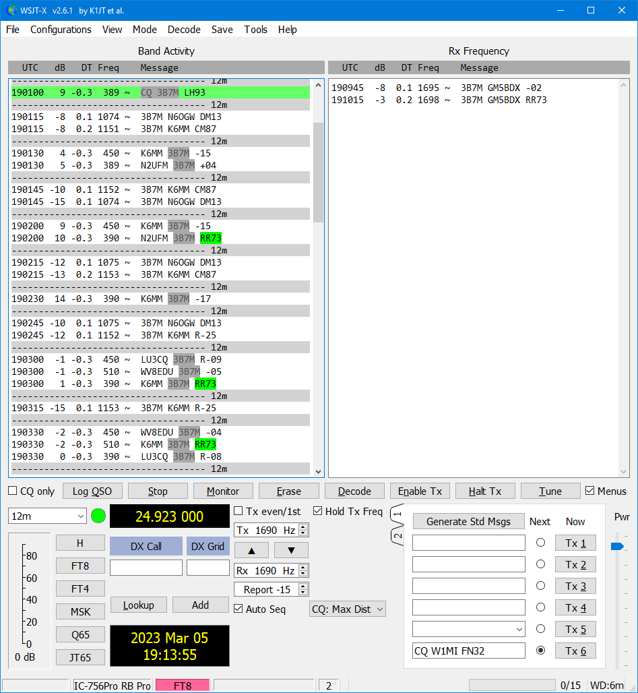

On Mon, Mar 6, 2023 at 8:15 AM John Miller via Chat <chat@ncdxc.org> wrote:
Yesterday, I called 3B7M on 12M FT8. After about 20 minutes, he came back to me at 1902 UTC with a -17 report (Screen Snapshot #1). He wasn’t very strong. I responded 4 times with a -25 report. As the band faded, he gave me -24 report at 1904 UTC. I continued to send an R-26 report for several minutes but he disappeared from the band. Just as I was about to log the partial QSO (for safekeeping) ….a message popped up in the JTAlert Message window from Mike, W1MI in Pittsfield, MA (Screen Snapshot #2) — letting me know that 3B7M gave me an RR73. I don’t know Mike. Never met him, but he was kind enough to message me and send me the RR73 screen shot from his computer (Screen Snapshot #3). You’ll notice 3B7M sent me RR73 twice at 1903-00 and 1903-30. Those never showed up on my screen, which is why I kept calling him, even after he sent me another R-24 report at 1904-30._______________________________________________Bottom Line #1: Get JTAlert and keep that Message Window open. You never know who might be watching your parade.Bottom Line #2: Follow the LFWL principle: Log First, Worry Later — especially an incomplete report from a rare one with a weak signal.Bottom Line #3: When you’re working that Hot DX, check into the NCDXC W6TI Repeater — lots of helpful eyes there.73,John, K6MM
Chat mailing list
Chat@ncdxc.org
http://mail.ncdxc.org/mailman/listinfo/chat_ncdxc.org